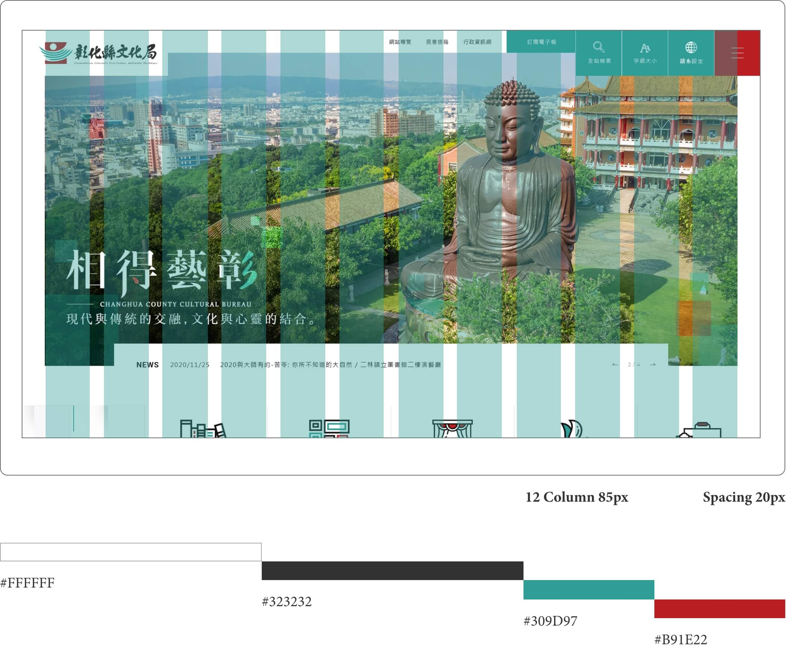
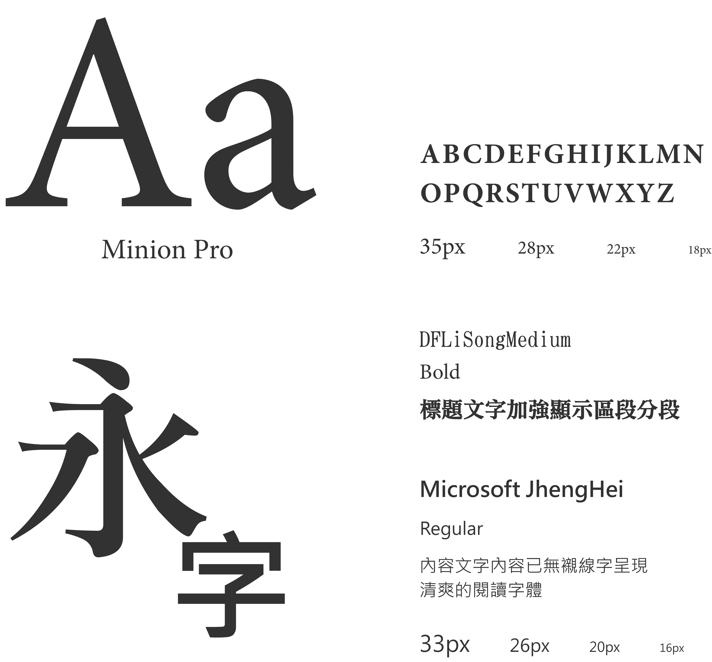
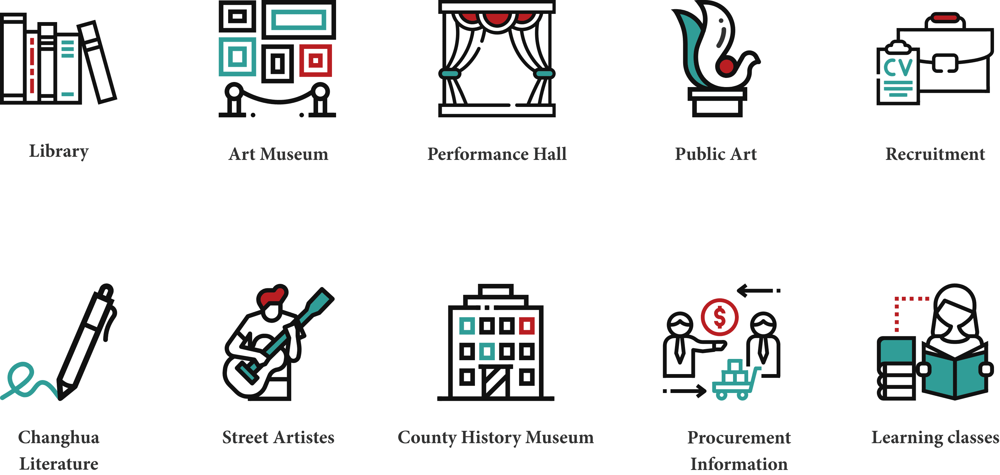

The Changhua County Cultural Affairs Bureau’s website renovation is a government tender project. Situated in the heart of Taiwan, Changhua is a city of arts and letters that has given birth to many of Taiwan’s renowned literary authors and folk performance troupes. Consequently, the government frequently hosts literary contests to foster new writers and performance events to attract tourists from other regions. Thus, the visibility of news becomes crucial, and the Changhua County Cultural Affairs Bureau’s website plays an essential role in this.
A meticulous design system was established to ensure consistent operational logic across the entire site.
  Related to arts and culture, the site incorporates intriguing design elements within its layout. The use of appropriate whitespace adds a refreshing feel and enhances user focus on the content. Careful planning of user flow provides an intuitive experience, embellished with local elements to enrich the visual experience. Large banner areas are used to draw in users and increase the Time On Site.